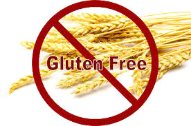

What the Heck is Gluten Anyway?
Gluten refers to the proteins found in wheat endosperm (a type of tissue produced in seeds that's ground to make flour). Gluten both nourishes plant embryos during germination and later affects the elasticity of dough, which in turn affects the chewiness of baked wheat products. Gluten is actually composed of two different proteins: gliadin (a prolamin protein) and glutenin (a glutelin protein). Though "true gluten" is sometimes defined as being specific to wheat, gluten is often said to be part of other cereal grains — including rye, barley and various crossbreeds — because these grains also contain protein composites made from prolamins and glutelins.
Why is gluten bad? Gluten isn't necessarily bad, but some people are gluten-intolerant, meaning their bodies produce an abnormal immune response when it breaks down gluten from wheat and related grains during digestion. The most well-known form of gluten intolerance is celiac disease, which affects one in every 141 people in the United States. When someone with celiac disease consumes gluten, it triggers an immune response that damages their intestines, preventing them from absorbing vital nutrients. Wheat allergy is a rare type of gluten intolerance — it's a classic food allergy marked by skin, respiratory or gastrointestinal reactions to wheat allergens. Recently, scientists have become aware of another potential form of intolerance called nonceliac gluten sensitivity. After consuming gluten, patients with gluten sensitivity may experience many celiac disease symptoms, such as diarrhea, fatigue and joint pain, but don't appear to have damaged intestines. In cases of gluten intolerance, doctors typically recommend a gluten-free diet. Patients must avoid eating any foods and ingredients that contains gluten, including bread, beer, french fries, pasta, salad dressing, soy sauce and even some soups (unless otherwise marked as "gluten-free").

How to Exercise When Arthristis Hurts
As you consider starting an arthritis exercise program, understand what's within your limits and what level of exercise is likely to give you results.
Exercise is crucial for people with arthritis. It increases strength and flexibility, reduces joint pain, and helps combat fatigue. Of course, when stiff and painful joints are already bogging you down, the thought of walking around the block or swimming a few laps might seem overwhelming.
But you don't need to run a marathon or swim as fast as an Olympic competitor to help reduce the symptoms of your arthritis. Even moderate exercise can ease your pain and help you maintain a healthy weight. When arthritis threatens to immobilize you, exercise keeps you moving. Not convinced? Read on.
Exercise can help you improve your health and fitness without hurting your joints. Along with your current treatment program, exercise can: Strengthen the muscles around your joints Help you maintain bone strength Give you more strength and energy to get through the day Make it easier to get a good night's sleep Help you control your weight Make you feel better about yourself and improve your sense of well-being Though you might think exercise will aggravate your joint pain and stiffness, that's not the case. Lack of exercise actually can make your joints even more painful and stiff. That's because keeping your muscles and surrounding tissue strong is crucial to maintaining support for your bones. Not exercising weakens those supporting muscles, creating more stress on your joints.